Failure discovery
Using language and model behavior to identify coherent slices where classifiers systematically fail.
Robust, interpretable, multimodal medical AI
I am a Ph.D. candidate in Electrical and Computer Engineering at Boston University, advised by Kayhan Batmanghelich at Batman Lab and Clare B. Poynton at BU Chobanian & Avedisian School of Medicine. My research builds models that make medical AI more robust, interpretable, and clinically useful.
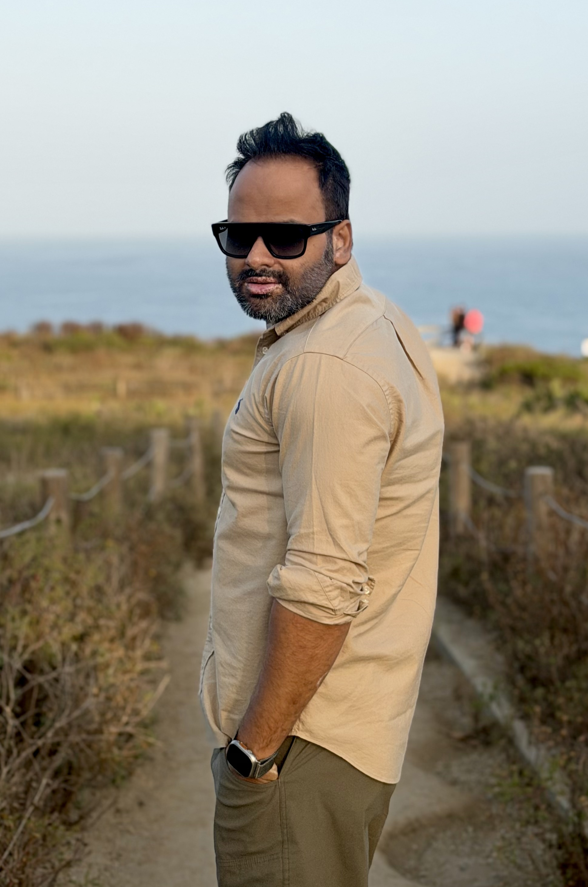
Research Agenda
My work focuses on hidden failure modes in visual classifiers, robust representations, and grounding medical predictions in human-understandable evidence.
Using language and model behavior to identify coherent slices where classifiers systematically fail.
Pretraining and fine-tuning methods that reduce subpopulation errors and distributional brittleness.
Vision-language and concept-based models for mammography and chest radiographs.
Uncertainty and factuality methods for reports that align generated language with clinical evidence.
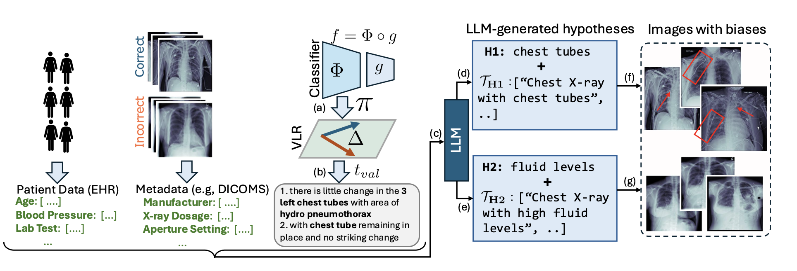
Language-driven slice discovery and error rectification for vision classifiers.
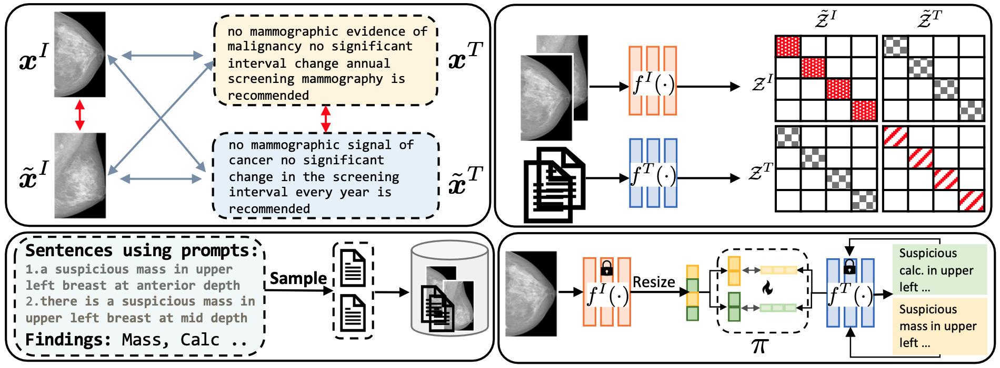
A vision-language foundation model for data-efficient and robust mammography.
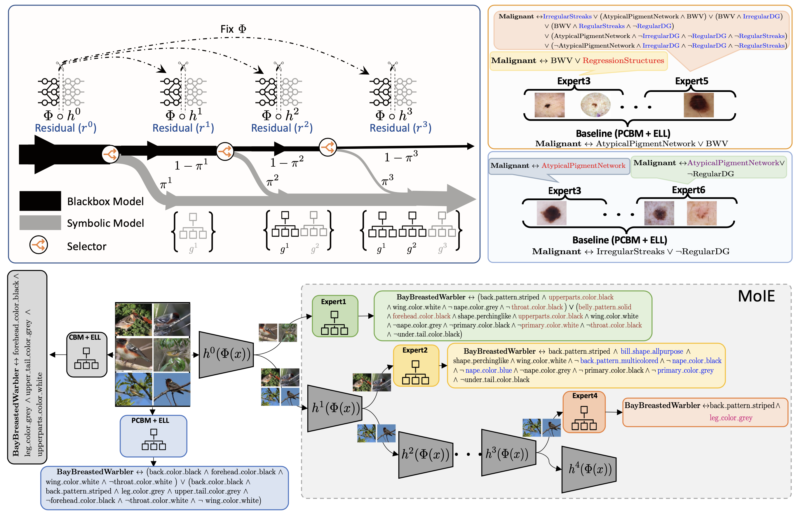
Extracting interpretable models from black-box predictors through route, interpret, repeat.
Updates
Publications
A curated list of recent work. The links point to project pages, papers, code, posters, slides, and reviews when available.
ACL 2025
LADDER uses natural language and LLMs to discover classifier blind spots and rectify systematic errors.
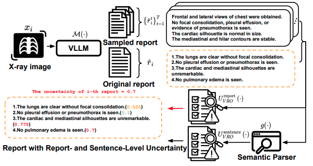
NAACL Findings 2025
Uncertainty estimation for factuality in chest X-ray report generation.
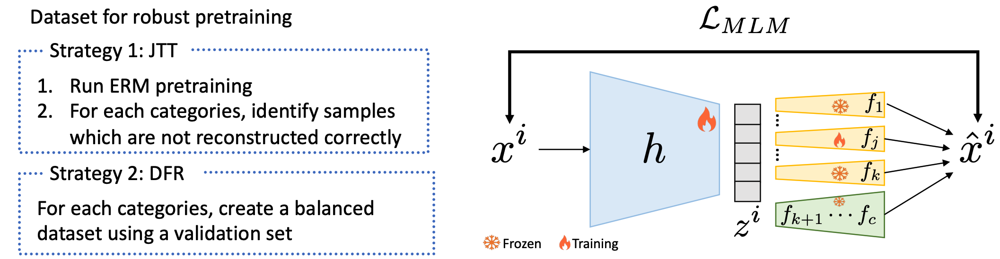
TRL Workshop, NeurIPS 2024
Self-supervised tabular representation learning with bias-aware fine-tuning to improve subpopulation generalization.
MICCAI 2024, early accept
A mammography vision-language model with sentence-level feature attribution through Mammo-FActOR.
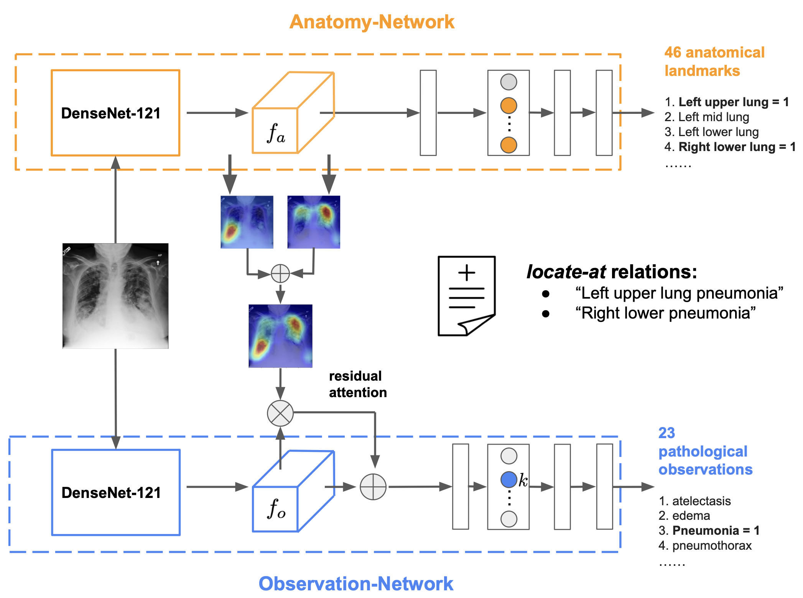
Radiology: Artificial Intelligence 2024
A weakly supervised model for classifying and localizing disease progression in chest radiographs.
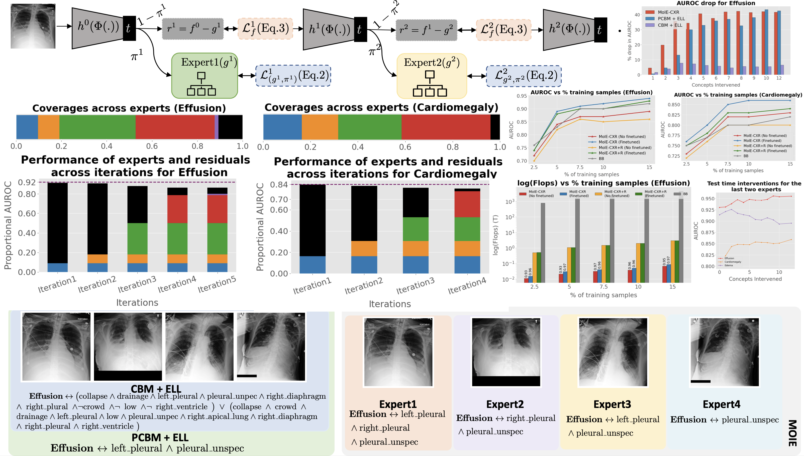
MICCAI 2023, early accept
An interpretable chest X-ray model efficiently adapted to new domains through semi-supervised learning and distillation.
ICML 2023
Iteratively extracts interpretable expert models from a black box while a residual model handles harder cases.
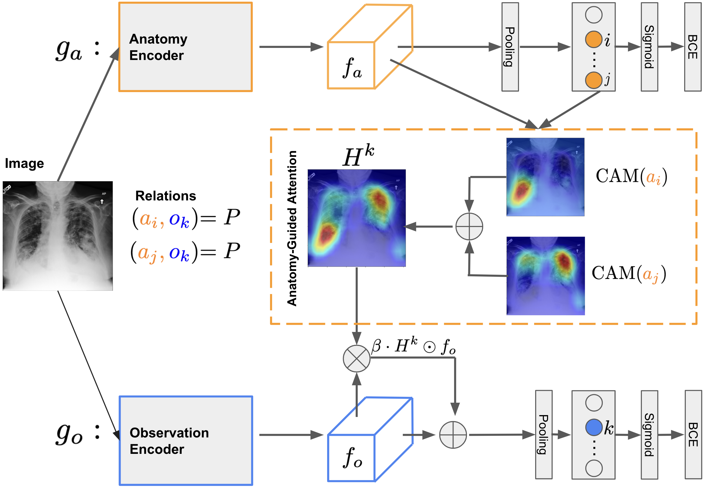
MICCAI 2022
An anatomy-guided chest X-ray model using report supervision, anatomy attention, and positive-unlabeled learning.
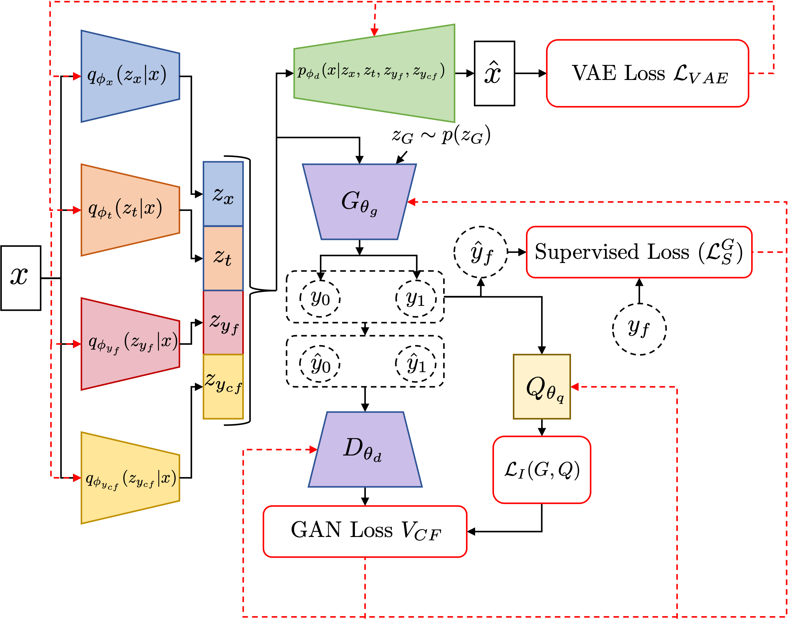
AMIA 2022, oral
A generative framework for counterfactual prediction and treatment effect estimation from observational data.
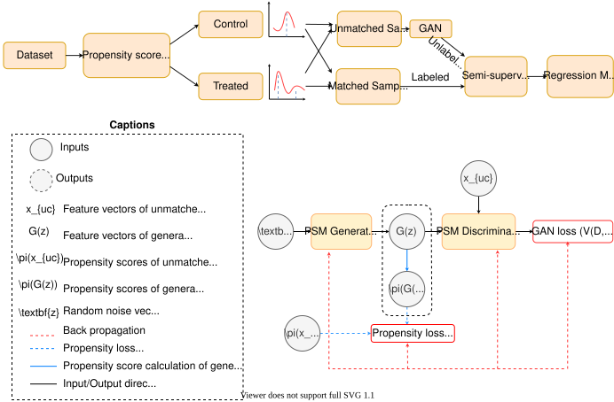
CMPB Update 2021
GAN-based synthetic matching for balancing observational datasets in treatment effect estimation.
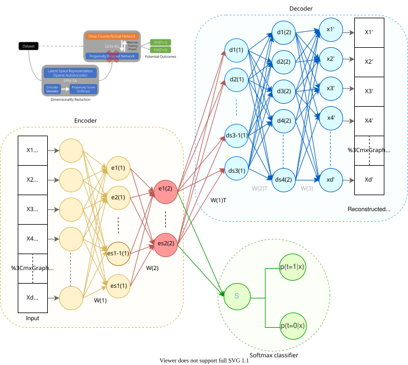
JAMIA 2021
A deep propensity network with sparse autoencoding for treatment effect estimation.
Path
Multimodal foundation models for prostate cancer and robotic surgery.
Robust representation learning for tabular data and systematic error mitigation.
Electrical and Computer Engineering, Batman Lab.
Intelligent Systems Program before transferring to BU with advisor move.
Research in medical AI, causal inference, and generative modeling.
6+ years across Lexmark and Cognizant using Angular, C#/.NET, WCF, Node.js, Oracle, and MS SQL Server.
Earlier Projects
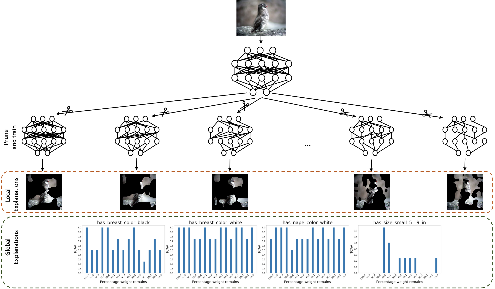
Pruning, Grad-CAM, and concept activations for consistency of explanations.
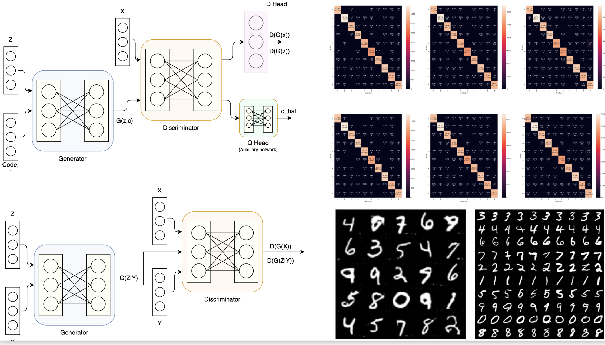
Efficient classification through generative data augmentation.
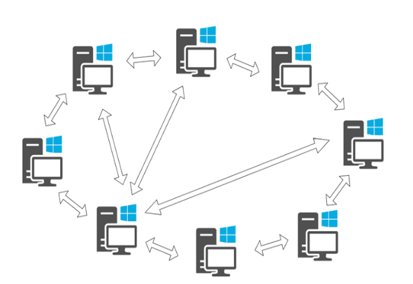
A Java implementation of a simplified peer-to-peer file sharing network.
Teaching, Mentoring, Service
I maintain a collection of resources for machine learning, deep learning, computer vision, medical imaging, and AI research.